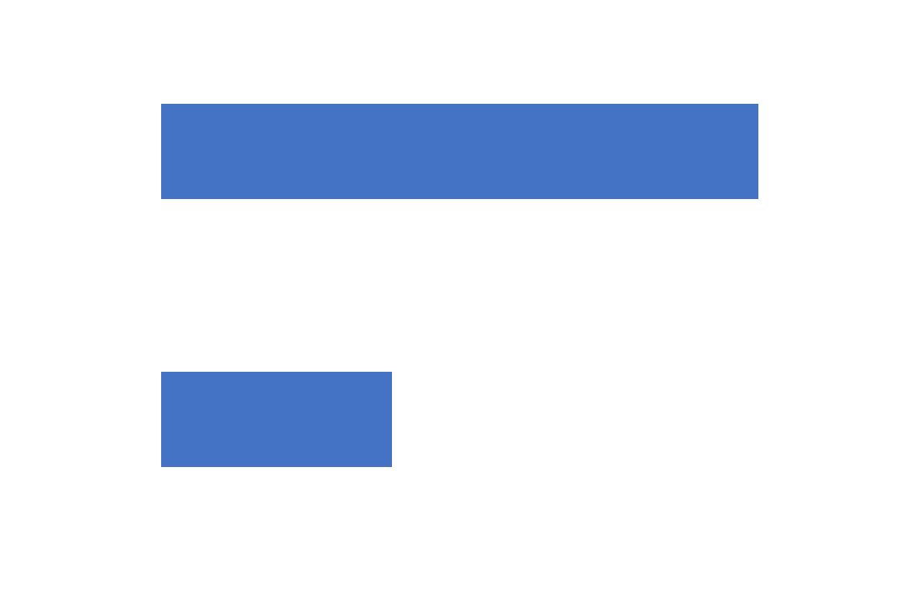
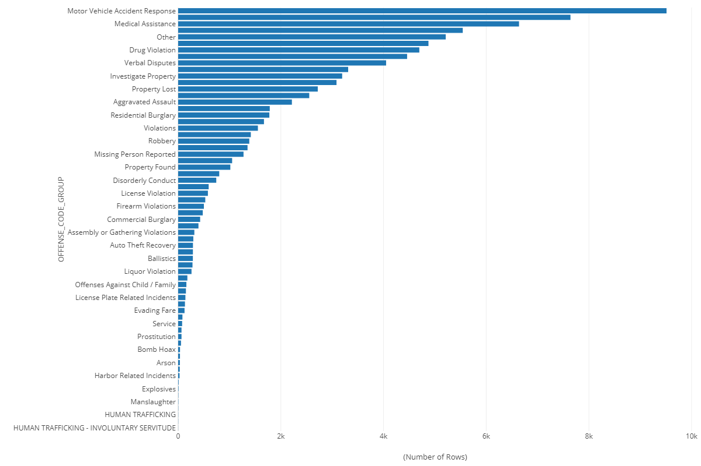
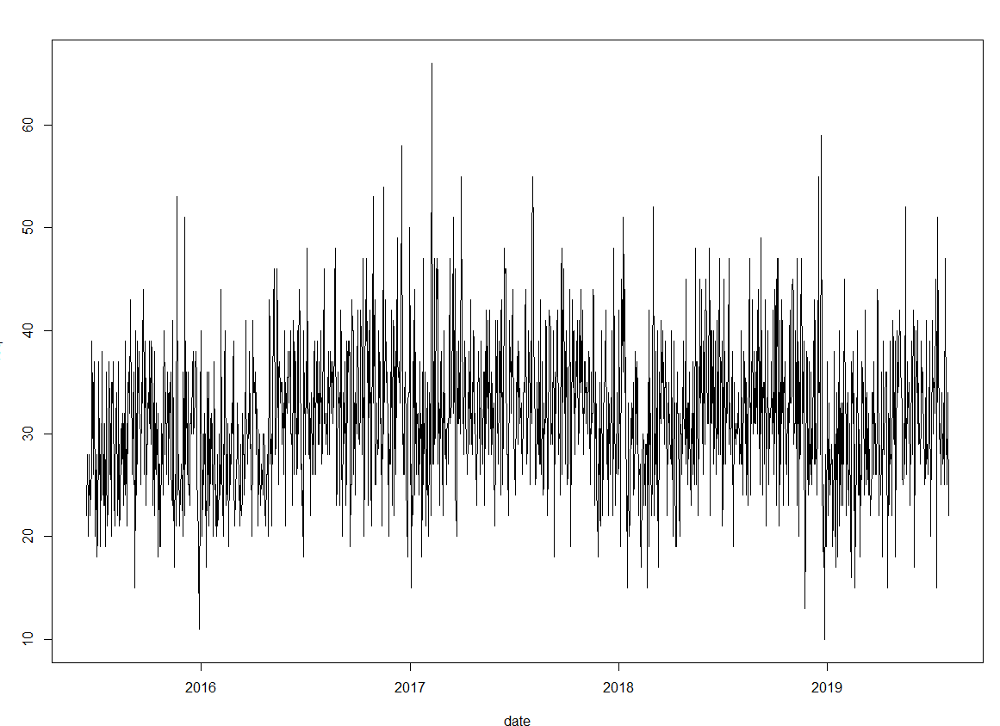

Boston Motor Vehicle Accidents: Demographic Factors
Group Members (in Alphabetical Order):
Yuqing LIU,
Shi QIU,
Xuejun SUN,
Shuang ZHANG,
Lexie Zimmy
NOT FINAL VERSION
Boston is suffering from motor accidents

Boston is suffering from motor accidents

Boston Motor Accident Trend

## Data that we have
- Boston 2016 Crime Data
- Boston 2016 Census Data
### Boston 2016 Crime Data
- OFFENSE_CODE
- DISTRICT
- OCCURRED_ON_DATE
- tract
- p_unemp
- p_working
- ...
### Boston 2016 Census Data
- tract
- pop\, pop_den
- med_age
- med_hh_inc
- p_white
- p_poverty
- p_unemp
- ...
## Data wrangling
- Filter
- Summarize
- Join
- Mutate
Filtering
- Remove duplicated data
- Filter out motor accident records
crime <- boston_crime_2016[!duplicated(boston_crime_2016$INCIDENT_NUMBER),]
crime <- crime %>%
filter(OFFENSE_CODE_GROUP=="Motor Vehicle Accident Response")
Summarize & Join
- Summarize the total number of accidents per tract
- Left join with Boston Census 2016
crime <- crime %>%
group_by(tract) %>%
summarize(total_accident=n()) %>%
left_join(boston_census_2016,by=c("tract"="tract"))
## Mutate
- Calculate accident rate per 1,000 population
`$$ accident\_rate = \frac{total\_accident}{pop}\times1000 $$`
## Linear Regression
`$$Y_i=\beta_0+\beta_1X_{i1}+\beta_2X_{i2}+\ldots+\beta_pX_{ip}+\epsilon_i$$`
- `$Y_i$`: Accident rate
- `$\beta_0$`: Constant
- `$\beta_jX_{ij}$`: Independent variables and its coefficients
- `$\epsilon_i$`: Random error
Accident Rate ~
### Percentage of Female Population
- Females tend to express more concern on motor vehicle accident than males
- Different social and economic status
Accident Rate ~
### Unemployment Rate
- Lower average vehicle condition
- Higher anxiety
Accident Rate ~
### Percentage of Senior Population
- Physical functionality
- Traffic awareness
- Slow response and weak self-protection awareness
Accident Rate ~
Population Density
The rate of traffic accidents increases as population density decreases.
- Sprawling land use patterns outside of the urban core
- Higher speeds, more vehicle miles traveled
Accident Rate ~
### Percentage of Kids
- Do not directly influence motor accident rate
- Will influence population density and education rate, which leads to change of accident rate
## Suggestion
- Increase the employment rate
- Target safety improvement resources in tracts with higher populations of seniors
- Implement traffic calming measures in more sprawled tracts